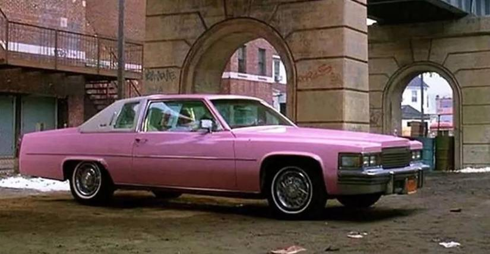
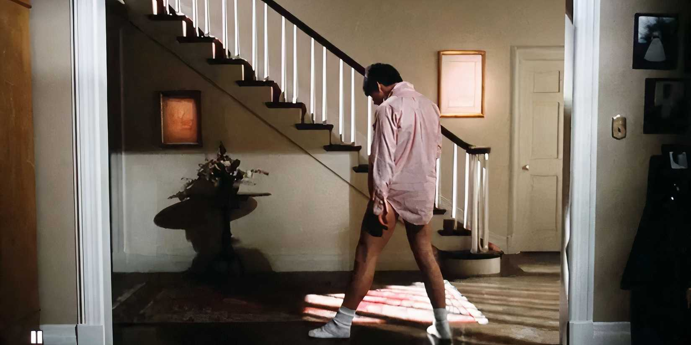
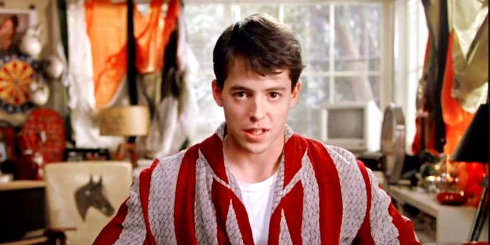
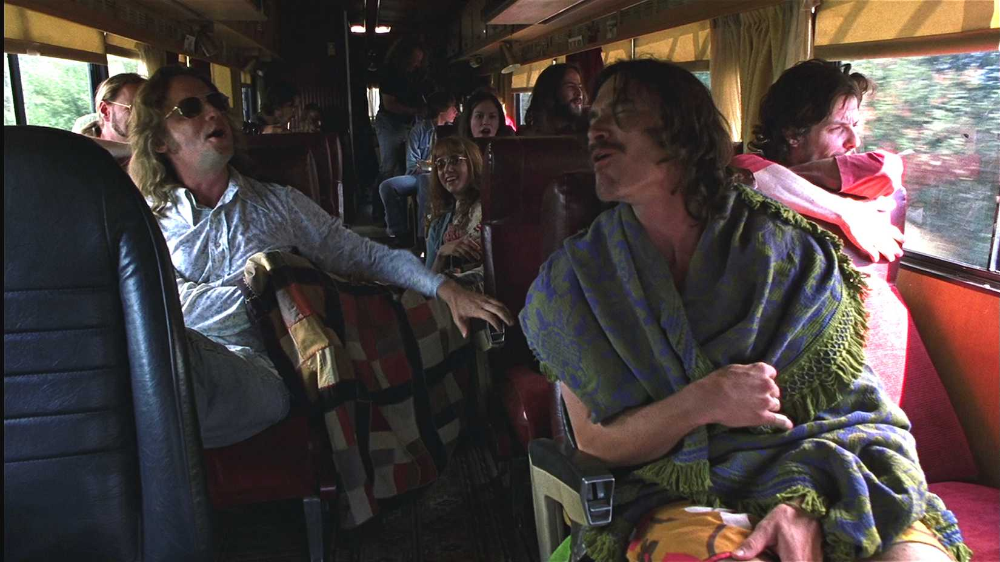
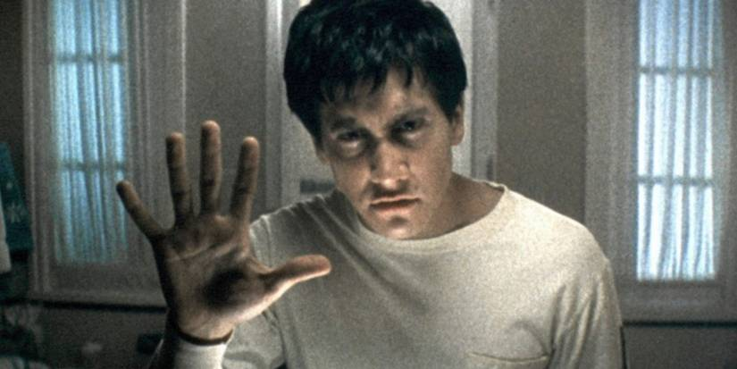

The Art of the Perfect Needle Drop: Iconic Movie Music Moments

The imagery of a needle dropping to hit the vinyl is one of music’s most iconic, and it’s taken on greater significance in terms of music’s relationship to cinema. Directors like Martin Scorsese and Quentin Tarantino kept the needle drop relevant over the decades—the artful selection of a pre-existing piece of popular music to soundtrack, and help amplify, a cinematic moment.
Unlock Personalized Content &
Exclusive Features For Free
- Engage in discussions in Threads
- Follow and Like top authors, topics, and trends
- Browse with fewer ads across the site
- Personalize your profile to showcase your activity
- Get a content feed tailored to your interests
By creating an account, you agree to our Terms of Use and Privacy Policy. You also agree to receive our newsletters; you can unsubscribe any time.
Log in or Create an Account For Free
Create an account
Please provide your email address to finish creating your account.
*Required: 8 chars, 1 capital letter, 1 number
By creating an account, you agree to our Terms of Use and Privacy Policy. You also agree to receive our newsletters; you can unsubscribe any time.
The practice was already picking up speed in the ‘60s with flicks like The Graduate and Easy Rider, and Scorsese played a key role in developing it into an artform during the '70s, drawing on classics like “Be My Baby” and “Jumpin’ Jack Flash” to help set the tone in Mean Streets.
Meanwhile, Tarantino further popularized the needle drop when his career kicked off in the ‘90s, and his films generally avoid a composed soundtrack altogether in favor of a woven musical tapestry composed almost entirely of needle drops (both recognizable and obscure).
Whether you’re talking about films from cinema’s greatest auteurs, or blockbusters from the superhero era, there are needle drops that really stick in your head, and lodge themselves into popular culture. Let’s take a dig through the cinema’s special record box.
Reservoir Dogs: "Stuck in the Middle with You" by Stealers Wheel (1992)
Inspired needle drops are so frequent in Tarantino films that it’s tough to know where to begin. So why not just start at the beginning? The writer-director burst into popular culture with his directorial debut, Reservoir Dogs, in 1992, drawing immediate controversy for his depictions of crime and violence. There was one scene in particular that everyone was talking about.
Reports emerging from Sundance and Cannes indicated walkouts during Mr Blonde’s infamous ear-cutting torture scene. Situated in an abandoned warehouse, Michael Madsen pulls a razor from his boots and proceeds to glide across his makeshift dancefloor to the catchy pop soundtrack of the Stealer Wheels 1972 classic, before getting down to business.
"Stuck in the Middle with You" is the perfect foil for Madsen, who gives what is surely the performance of his career with equal parts swag and menace. It’s also the perfect showcase for Tarantino and his provocative, ironic cultural collages—it's hysterical and terrifying. In hindsight, the scene (and the needle drop) was key to establishing Tarantino as an auteur superstar.
Wayne’s World: "Bohemian Rhapsody" by Queen (1992)
Ten minutes into Wayne’s World, the film’s rock-loving protagonists Wayne (Mike Myers) and Garth (Dana Carvey) pile into a cramped AMC Pacer with all of their buddies. Wayne pops a cassette into the stereo, and Queen "Bohemian Rhapsody" starts to play. The group knows every operatic lyric (“Galileo”), though eventually, the headbanging begins.
I’m old enough to remember when Wayne’s World hit cinemas and how ubiquitous it really was, and its defining scene was Myers and Carvey banging their heads with exuberance to "Bohemian Rhapsody." The song was already a hit upon release in 1975, but its appearance in Wayne’s World helped ensure it remained memorable forevermore.
Goodfellas: “Layla” Derek and the Dominos (1990)
{kind=link}

If Tarantino perfected the needle drop, then it was Scorsese who paved the path. Goodfellas contains the greatest collection of Scorsese needle drops in a single film, including his use of “Layla” from about the 4-minute mark, when the song exits to the melancholic sounds of piano and slide guitar, which Scorsese uses to soundtrack a shocking scene of mob retribution.
Full of grim tracking shots sequenced with uneasy perfection to one of Eric Clapton’s enduring classics (written with drummer Jim Gordon), Ray Liotta’s Henry narrates the discoveries of a bloody series of mob hits, the camera lingering altogether too long as the epic 7-minute song reaches its climax. It’s a genius exercise of contrasts, destined to be discussed in film school forevermore.
Guardians of the Galaxy: "Come and Get Your Love" by Redbone in (2014)
Pop-culture cinema needs its needle drops, too. James Gunn graduated to the big time with his Guardians of the Galaxy trilogy, and protagonist Peter Quill’s Awesome Mix Vol. 1 cassette plays a crucial part in establishing the space opera’s quirky, offbeat charm. The original’s best (and most iconic) needle drop takes place in the film’s introduction.
Chris Pratt emerges from the shadows on a mysterious abandoned planet, removes his nanotech helmet, presses play on his cassette player, and proceeds to dance to the tune of Redbone’s 1974 funk-rock classic “Come and Get Your Love.” The scene proved so iconic that it was referenced (and playfully parodied) in Avengers: Engame.
Gunn’s Guardians of the Galaxy needle drops work because they ground the films with a human tone that neatly contrasts all the galactic sci-fi silliness. He’s used unexpected, often obscure and half-forgotten needle drops in his films time and time again, always to great effect.
Risky Business “Old Time Rock and Roll” by Bob Seger (1983)
{kind=link}

You’d be hard-pressed to think of a needle drop more iconic than this. When Joel (Tom Cruise) slides across the floor in socks and underwear after his parents depart in Risky Business, lip-syncing to Bob Seger, it signaled the arrival of Cruise himself as a leading-man superstar.
“Old Time Rock and Roll” nicely soundtracked Joel’s yearning to break free from his suburban constraints, though the song’s ode to rock nostalgia also syncs nicely with director Paul Brickman’s more provocative preoccupations, with his sly satire of ‘80s Reagan-era capitalism. Ironic intent aside, “Old Time Rock and Roll” went on to become the de facto anthem of classic-rock FM radio.
Deadpool & Wolverine: “Like a Prayer” Madonna (2024)
Deadpool films draw heavily on needle drops to emphasize their cheeky, meta-ironic tone, and Deadpool & Wolverine is full of hilarious choices. Deadpool dances to N’Sync “Bye Bye Bye” during the intro’s grave-robbing scene; “You’re the One That I Want” plays while Deadpool and Wolverine eviscerate each other in the backseat of a Honda Odyssey minivan.
But nothing beats “Like a Prayer.” Deadpool and Wolverine round the corner in slow motion during its extended intro (a special mix cut especially for the film, featuring extra choir). The song's eventual drop is already such an ecstatic moment of pop catharsis, and here it kicks off a continuous one-shot that lasts for a full several minutes of bloody, chaotic violence. Glorious.
Ferris Bueller’s Day Off: "Oh Yeah" by Yello (1986)
{kind=link}

When I was growing up in the ‘80s and ‘90s, “Oh Yeah” seemed to lurk everywhere, its sequenced percussion and manipulated vocals widely understood as shorthand for raunchiness and debauchery (it’s the theme song for The Simpsons’ Duffman, after all).
The song surely owes its ubiquity to its appearance in Ferris Bueller’s Day Off. “Oh Yeah” plays while Ferris convinces his best buddy Cameron to steal his dad’s prized 1961 Ferrari GT, and the song’s sleazy charms perfectly mirror the film’s escalating fun (as well as the manipulating charm of Ferris himself). All aboard the 1980s zeitgeist train, next stop The Simpsons.
Almost Famous: "Tiny Dancer" by Elton John (2000)
{kind=link}

It makes perfect sense that Cameron Crowe’s ode to the hypnotic power of rock charisma would feature more than a few needle drops. Almost Famous is a semi-autobiographical account of Crowe’s own experiences as an aspiring teenage rock journalist, and this early Elton John classic plays roughly midway through the film, shortly after tensions flare on tour.
“Tiny Dancer” plays on the tour bus and inspires a sing-along among the band and crew. It’s a moment of reconciliation following the earlier conflict, and it’s surprisingly resonant. Crowe somehow manages to capture here the transcendent power of music, its power to form community and to unite.
Donnie Darko: "Mad World" by Gary Jules and Michael Andrews (2001)
{kind=link}

Last week, ScreenRant examined the enduring appeal of Tears for Fears' “Everybody Wants to Rule the World,” which has appeared in more than 50 film and television soundtracks as it approaches its 40th anniversary. “Everybody Wants to Rule the World” might reign as their most iconic track, but in terms of singular needle drops, it’s bested by “Mad World.”
It’s a stripped-down cover of “Mad World” that plays over the haunting final montage of Donnie Darko, a somber payoff to Donnie’s sacrifice that examines all the characters impacted by it. The cover arguably eclipsed Tears for Fears' original hit, reaching the top of the UK charts and taking on a life of its own as an anthem of shared sorrow, tied inextricably to the film’s cult status.
Saltburn: "Murder on the Dancefloor" by Sophie Ellis-Bextor (2023)
A cheeky reminder that memorable needle drops are as relevant as ever in modern cinema. This euphoric early noughties pop banger is the centerpiece of the film’s unhinged finale, as Oliver (Barry Keoghan) celebrates his villainous victory with a triumphant, naked dance through the halls of Saltburn estate.
"Murder on the Dancefloor" is now so synonymous with its appearance in Saltburn that you can’t hear it without your mind wandering to that particular scene.